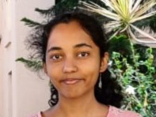

About Me
Hello! I'm Parvathi Annamalai, and I'm thrilled to share a bit more about myself.
I am a passionate second year student pursuing a B.Tech in Computer Science with a specialization in Information Security at Vellore Institute of Technology. I believe that learning is a lifelong journey. Whether it is through courses or projects, I am always excited to embrace the next learning opportunity.
Thank you for taking the time to get to know me a little better. Feel free to explore the rest of my portfolio to dive deeper into my skills and experiences. If you have any questions or if there's an opportunity for collaboration, don't hesitate to reach out.
Hobbies
I enjoy reading, dancing, solving puzzles and coding.


Reading open doors to a different worlds and offers a diverse range of perspectives and insights. It is a timeless pursuit.
Dance is a fun form of self expression and exercise. It fosters creativity and boosts physical fitness.
Puzzle solving and coding require a blend of logical thinking and creativity. To me, they are a means of continuous learning.
Skills
Programming
- C, C++
- Proficient
- Python
- Intermediate
- Java
- Intermediate
- HTML, CSS
- Beginner
Communication
| Name of the Language | Proficiency |
|---|---|
| English | Fluent |
| Tamil | Fluent |
| Hindi | Fluent |
| Sanskrit | Intermediate |
| Kannada | Beginner |
| Spanish | Beginner |
| Total Number of languages | 6 |
Education
B TECH COMPUTER SCIENCE WITH SPECIALISATION IN INFORMATION SECURITY 2022-2026
Current Semester: 4th
CGPA 9.60 (for the first 3 semesters)
CBSE CLASS XII 2022
Score - 94 %
100% in Computer Science
All subjects scored above 90%
CBSE CLASS X 2020
Score – 95.6 %
100% in Sanskrit & 98% in Mathematics
All subjects scored above 90%